Kansas • Summer traffic markets
Kansas fireworks shopping that’s easy to plan.
Kansas shoppers don’t want to guess—especially when July 4th week hits. This page is built to help you find Bellino Fireworks in the right Kansas market fast, then get on the road with a plan.
Wichita, Topeka, Lawrence, Manhattan, Salina, Hutchinson, Dodge City, Garden City, and the Kansas City-area communities all drive real seasonal traffic across the state.

Search Kansas locations fast.
Looking for fireworks in Kansas? Start with the market you’re closest to and narrow it down fast.
Bellino coverage is built around Kansas demand hubs like Wichita, the Kansas City-area, and the I-70 corridor—plus Topeka, Lawrence, Manhattan, Salina, Hutchinson, Dodge City, and Garden City as July 4th shopping ramps up.
Wichita is one of the biggest Kansas fireworks shopping lanes during July 4th week.
Border traffic and quick trips make KC-area coverage important for last-minute July shopping.
This page supports future Wichita, Topeka, Lawrence, and Manhattan city pages without starting over.
Area with Live locator
Search Wichita, Topeka, Lawrence, Manhattan, Salina, Hutchinson, Dodge City, Garden City, and more.
Look for the Bellino Flags and seasonal setup
The easiest way to spot a Bellino location is the summer visibility—flags, setup, and the seasonal look that makes the stop feel familiar when traffic picks up.
Kansas City Filter
Find locations by city.
Start with the biggest Kansas markets, then work outward without scrolling a giant wall of locations.
Wichita Fireworks Locations
Wichita is one of the strongest Kansas summer shopping lanes—built for fast stops and big July traffic.
Topeka Fireworks Locations
Topeka coverage helps keep Kansas shopping convenient—especially during the July rush.
Lawrence Fireworks Locations
Lawrence is a key stop between larger markets—perfect for quick fireworks runs and summer weekends.
Manhattan Fireworks Locations
Manhattan keeps north/central Kansas shopping covered without sending people too far out of the way.
Ready to shop Kansas fireworks?
Start with the Kansas locator, filter by city, then head to a Bellino location with a plan for July 4th week.